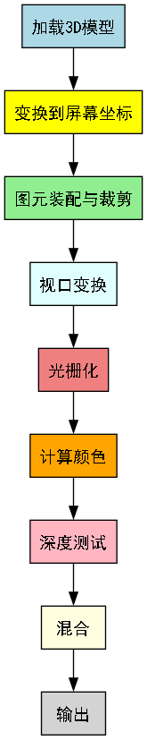

- 制作者
 1.14.0
1.14.0
|
FCT
|
当你在屏幕上看到一个3D物体时，它实际上经历了一个复杂的渲染过程。这个过程将3D空间中的几何数据转换为屏幕上的2D像素。
一个3D物体从数据到屏幕显示，需要经过以下几个主要阶段：

3D物体首先以数字形式存在，一般包含：
3D图形经过矩阵运算，转换成为2D屏幕上的坐标。
通常发生在顶点着色器
变换详见3D渲染下的各种变换
顶点着色器同时还会处理其他顶点属性（颜色、法线、纹理坐标等）
将标准化设备坐标（NDC）转换为屏幕像素坐标：
确定每个三角形覆盖屏幕上的哪些像素， 并为每个像素计算插值后的顶点属性（如颜色、纹理坐标、法线等）
像素着色器为每个像素计算最终结果：
通过比较像素的深度值，确定哪些像素应该被显示（前面的物体遮挡后面的物体
处理透明物体的颜色混合
最终的像素颜色被写入帧缓冲区，显示在屏幕上